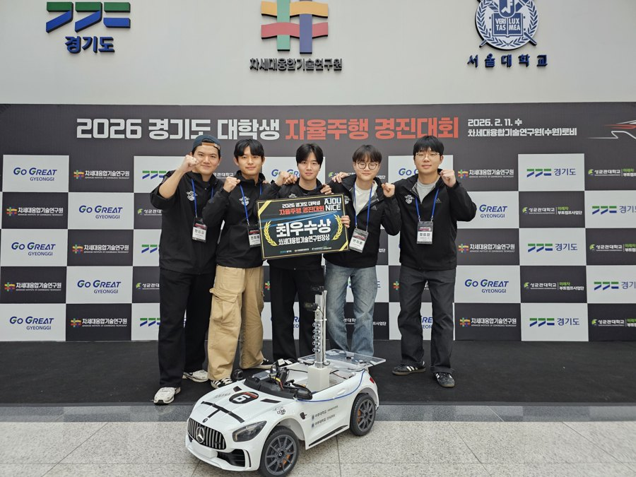
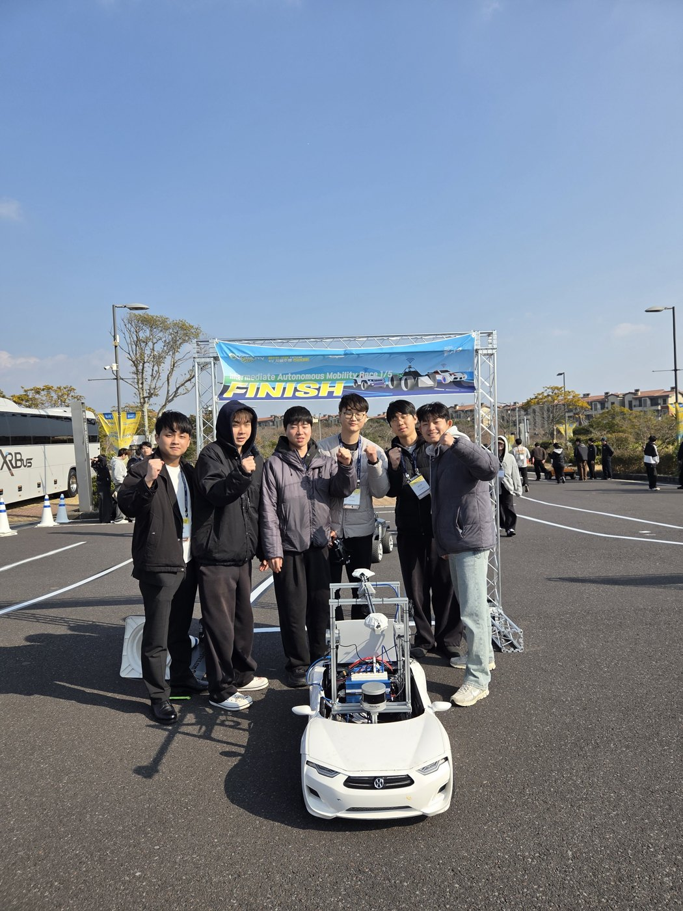
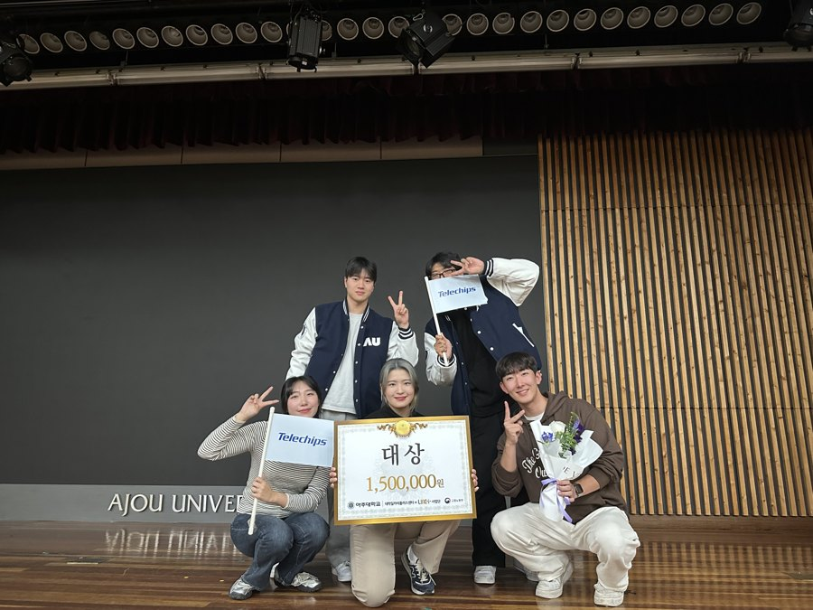
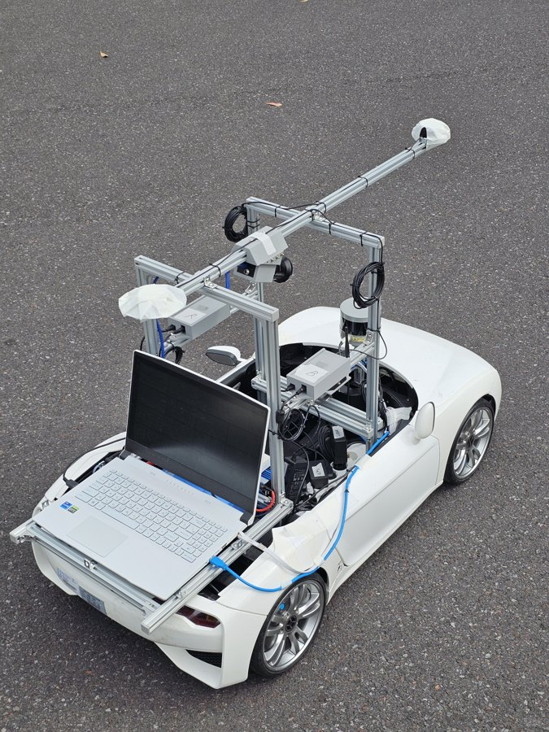
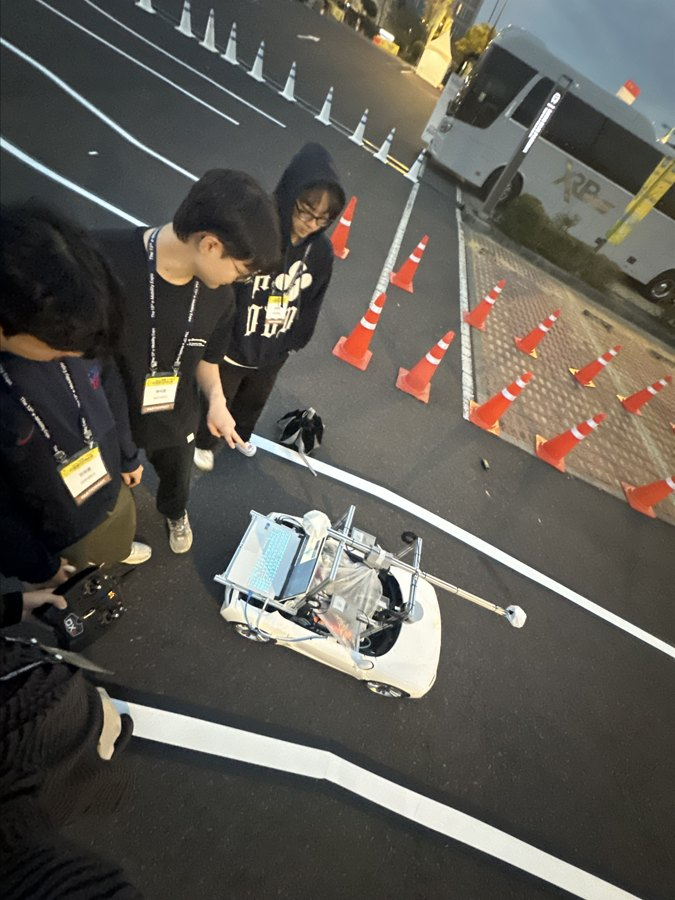

구동열Gu Dong Yeol
Education
- 아주대학교 미래모빌리티공학과
2023.03 – 2027.02 (졸업 예정) - GPA 4.25 / 4.5 (전공 4.31)
Relevant Coursework
- 자동제어, 전동기제어, 자율주행차공학
- 하이브리드자동차공학, 컴퓨터시스템
- 논리회로, 논리회로실험
Career Interests
- 자율주행 · ADAS 제어 SW 개발
- 차량 SW 검증 · 평가 (시뮬레이션, 실차 시험)
- 차량 제어기 임베디드 SW

주요 프로젝트 1: 2026 경기도 대학생 자율주행 경진대회
유아용 전동차를 개조한 자율주행차로 차선 주행, 장애물 회피, 신호등, 자율주차 4개 과제를 모두 완주했습니다.
- 기간
- 2025.10 – 2026.02
- 팀
- AJOU NICE, 5인
- 담당
- 자율주차 Planner (단독 설계·구현), 조향 하위 제어기, 통신 Fail-safe
- 스택
- ROS1 · Python · C++ · Arduino · 2D LiDAR · 카메라
- 성과
- 차선 주행 ✓ · 장애물 회피 ✓ · 신호등 ✓ · 자율주차 ✓ (4개 미션 모두 성공, 미션 감점 0점)
최우수상 · 차세대융합기술연구원장상 · 20팀 중 2위

주요 프로젝트 2: 제5회 국제 대학생 EV 자율주행 경진대회
1/5 스케일 EV에서 LiDAR+IMU 측위(LIO-SAM) 하나로 차선·GPS·콘 구간을 모두 주행해 본선 전 구간을 완주했습니다.
- 기간
- 2026.02 – 2026.03
- 팀
- AJOU NICE, 5인
- 담당
- Pure Pursuit 주행 제어기 캘리브레이션, GPS ↔ LIO-SAM 좌표 정합, 계획 파라미터 캘리브레이션, 조향 하위 제어기
- 스택
- ROS1 · Python · C++ · LIO-SAM · 3D LiDAR · IMU · 듀얼 RTK GPS
- 성과
- 차선 · GPS · 콘 구간을 포함한 본선 전 구간 완주 (정·역방향 두 번 주행)

자율주행 대회부터 산업 분석, 제조 AI까지
대표 프로젝트 외에 참여한 대회·프로젝트·분석 활동입니다.
대학생 창작모빌리티 경진대회
실차 1/2 크기 ERP42로 1 km 구간에서 자율주차·장애물 회피·차선 유지·신호등 미션 수행. 판단·제어 팀원
- IMU 헤딩의 바이어스·노이즈 누적과 RTK fix 불안정을 실험으로 확인, RTK fix 구간의 전역 좌표 변화로 IMU 헤딩을 보정하는 알고리즘 개발
- GPS 기준 경로를 Stanley로 추종, 구간 곡률·미션·신호 타이밍을 반영한 목표 속도 설정, RMSE로 튜닝
- 고속 구간 횡방향 진동을 yaw rate 제한 후처리로 개선
- 인지 팀과 콘 중심 2D 좌표 인터페이스를 합의하고 사선·평행 주차 판단과 경로 생성 구현 → 전 구간 완주
용접 설비 AI 정비 지원 시스템
용접건 센서 데이터로 이상 징후를 ML로 감지하고, 제조사 매뉴얼의 점검 정보와 연결하는 MVP 개발
- 담당: 매뉴얼 기반 지식 그래프(Neo4j) 설계·구축, 고장 유형–원인–점검–조치 관계 정의
- ML 출력 고장 유형으로 그래프를 조회하고 LangChain으로 LLM 답변을 만드는 Graph RAG 파이프라인
- 인용한 문서·페이지가 실제 검색 근거인지 검사하는 후처리
- 매주 요구사항·구조 검토, 격주 현직자 멘토링
아주히든챔피언 학생발굴단 11기 발표회
차량용 팹리스 반도체 기업 텔레칩스를 심층 분석해 발표
- 20여 팀이 참가한 최종발표회에서 100여 명 청중 앞에서 발표해 대상 수상
- 텔레칩스 선정, 재무·SWOT·PEST·3C 분석
- Cockpit SoC · ADAS AP · Automotive MCU 등 제품 포트폴리오 조사
- HR팀 현장 인터뷰: 인포테인먼트→ADAS·차량 네트워크 확장 전략 파악, SDV 전환에 따른 MCU 분산→HPC 통합 제어 산업 트렌드 확인
타임라인
아주대학교 미래모빌리티공학과 입학 학업
아주히든챔피언 학생발굴단 11기 발표회 대상
차량용 팹리스 반도체 기업 텔레칩스 심층 분석, 20여 팀 중 1위

2025 대학생 창작모빌리티 경진대회 본선 진출
국토교통부 주최·한국교통안전공단 주관. 실차 1/2 크기 ERP42로 1 km 자율주행, 판단·제어 팀원으로 주차 로직과 경로 추종 제어기 개발, 전 구간 완주


컴포즈커피 일경험
아르바이트 · 음료 제조, 홀 매니지먼트
모빌리티 소학회 'AUTOPIA' 부회장 학내활동
신입생 대상 'ROS 활용 자율주행 로직 개발' 세미나 기획·강의, 조별 LKAS 구현 실습 지도
아주대학교 VIC Lab 학부생 인턴 연구실
아반떼 CN7 실차 자율주행 시나리오 시험과 센서 데이터(rosbag) 수집, 3개 연구실 공동 논문 세미나에서 Waymo EMMA 발표, 자율주행 대회 기술 개발
2026 경기도 대학생 자율주행 경진대회 최우수상
유아용 전동차 기반 자율주행차. 자율주차 Planner, 조향 하위 제어기, 통신 Fail-safe 담당 (대표 프로젝트 1)

제5회 국제 대학생 EV 자율주행 경진대회 완주
국제전기자동차엑스포(IEVE) 주관. LiDAR+IMU SLAM 기반 측위 위에서 Pure Pursuit 캘리브레이션, GPS ↔ LIO-SAM 정합, 계획 파라미터, 조향 하위 제어기 담당 (대표 프로젝트 2)


차세대융합기술연구원 보조강사 일경험
고등학생 대상 자율주행차 제작 실습교육 지원, 3D 프린터·CAD 실습 지원
Huawei 'Seeds for the Future 2026' 국제교류
아주대학교 대표로 참가, 중국 선전·둥관 연수(9일). 한·중·일 대학생 팀으로 AI·5G·클라우드 강연과 영어 토론, 화웨이·DJI 방문


용접 설비 AI 정비 지원 시스템 개발 우수상
고용노동부 U3 연합 AI 직무 코어 프로젝트. 용접건 센서 ML 이상 탐지 + 정비 매뉴얼 기반 Graph RAG. 지식 그래프 구축과 LLM 답변 파이프라인 담당

아주대학교 졸업 예정 학업
GPA 4.25 / 4.5 (전공 4.31)
학력, 경력, 교육, 자격
학력
| 2023.03 – 2027.02 | 아주대학교 미래모빌리티공학과 졸업 예정 · GPA 4.25 / 4.5 (전공 4.31) · 학과 차석 |
경력
| 2025.05 – 2026.06 | 아주대학교 VIC Lab 학부생 인턴 아반떼 CN7 실차 시나리오 시험·센서 데이터 수집, 공동 논문 세미나 발표, 자율주행 대회 기술 개발 |
| 2026.06 – 07 | 차세대융합기술연구원 보조강사 고등학생 대상 자율주행차 제작 실습교육, 3D 프린터·CAD 실습 지원 |
| 2025.03 – 07 | 컴포즈커피 아르바이트 음료 제조, 홀 매니지먼트 |
자격 · 어학
| 2026.11.20 | ADsP 데이터분석 준전문가 | 한국데이터산업진흥원 |
| 2026.11.14 | AICE Associate | KT · 한국경제신문 |
| 2026.04.11 | TOEIC Speaking IH (140) | ETS |
| 2023.08 | 자동차 운전면허 2종 보통 |
병역
| 2021.01 – 2022.07 | 육군 병장 만기전역 |
보유 기술
교육 이수
| 2024.01 – 2024.06 | EV 이해 · HEV/PHEV 이해 | 현대엔지비 |
| 2025.02 | Limo PRO 활용 ROS2 교육 | 아주대 미래자동차사업단 · 충북대 |
| 2025.02.10 – 02.11 | Siemens AMESIM 활용 미래차 DX 설계 | 아주대 미래자동차사업단 · 충북대 |
| 2025.02.12 – 02.14 | AUTOSAR 심화 교육 (Mobilgene 실습) | 아주대 미래자동차사업단 · 충북대 |
| 2025.07 | CarMaker User Training | IPG Automotive Korea |
| 2025.09 | MATLAB/Simulink Onramp | MathWorks |
| 2026.04 – 2026.06 | H-모빌리티 클래스 자율주행 제어 트랙 | 현대자동차그룹 |
| 2026.08 | LabVIEW를 활용한 계측, 제어 및 자동화 | 아주대 미래자동차사업단 |
| 2026.10 – 2026.11 | 자동차 전장 기능안전 표준 - ISO 26262 기초 | 아주대 미래자동차사업단 |
| 2026.11 | AUTOSAR Classic Platform (CP) 기반 차량 SW 개발 | 현대엔지비 · 경기도미래모빌리티센터 |
수상
| 2024.10.02 | 아주히든챔피언 학생발굴단 11기 발표회 대상 | 아주대 RISE사업단 |
| 2026.02.11 | 2026 경기도 대학생 자율주행 경진대회 최우수상 | 차세대융합기술연구원 |
| 2026.11.18 | U3 연합 AI 직무 코어 프로젝트 연합발표회 · 용접 설비 AI 정비 지원 시스템 우수상 | 고용노동부 · 가천대 · 경기대 · 아주대 |
해외 경험
| 2026.08.23 – 31 | Huawei Seeds for the Future 2026 · 중국 선전·둥관 연수 화웨이 글로벌 ICT 인재 프로그램에 아주대 대표로 참가, 한·중·일 대학생 팀으로 AI·5G·클라우드 강연 수강과 영어 토론, 화웨이·DJI 방문 |